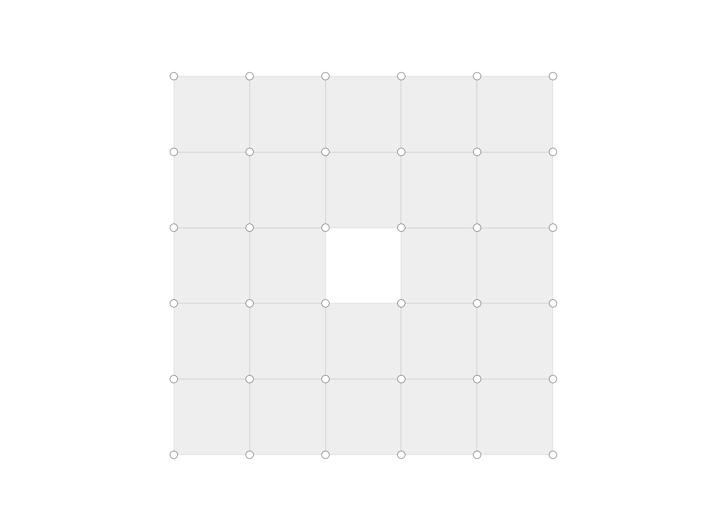

Mesh.delete_face
-
Mesh.delete_face(fkey)[source] Delete a face from the mesh object.
- Parameters
fkey (hashable) – The identifier of the face.
Examples
import compas from compas.datastructures import Mesh from compas.plotters import MeshPlotter mesh = Mesh.from_obj(compas.get('faces.obj')) mesh.delete_face(12) plotter = MeshPlotter(mesh) plotter.draw_vertices() plotter.draw_faces() plotter.show()